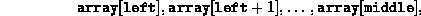

Data Structures and Algorithms
with Object-Oriented Design Patterns in Java
Data Structures and Algorithms
with Object-Oriented Design Patterns in Java
The merge method of the TwoWayMergeSorter class
is defined in Program  .
Altogether, this method takes three integer parameters,
left, middle, and right.
It is assumed that
.
Altogether, this method takes three integer parameters,
left, middle, and right.
It is assumed that

Furthermore, it is assumed that the two subsequences of the array,

and
are both sorted. The merge method merges the two sorted subsequences using the temporary array, tempArray. It then copies the merged (and sorted) sequence into the array at
Program: TwoWayMergeSorter class merge method.
In order to determine the running time of the merge method
it is necessary to recognize that the total number of iterations
of the two loops (lines 11-17, lines 18-19)
is ,
in the worst case.
The total number of iterations of the third loop (lines 20-21)
is the same.
Since all the loop bodies do a constant amount of work,
the total running time for the merge method is O(n),
where  is the total number of
elements in the two subsequences that are merged.
is the total number of
elements in the two subsequences that are merged.
 Copyright © 1998 by Bruno R. Preiss, P.Eng. All rights reserved.
Copyright © 1998 by Bruno R. Preiss, P.Eng. All rights reserved.